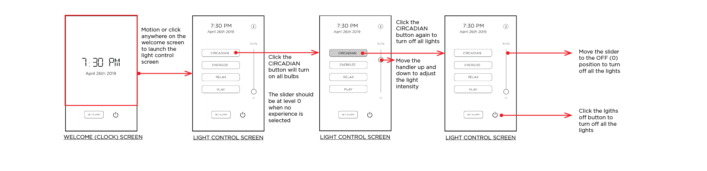
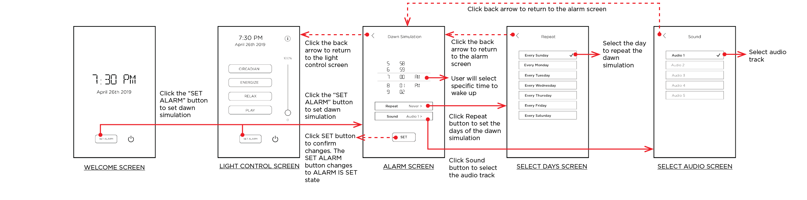

2019 - present
Ketra Light and its lighting control system used to be an important part of Stay Well, hospitality solution. However, after acquired by Lutron Electronics in April 2018, Ketra was no longer able to support the business of Stay Well. At the same time, the advanced wellness algorithm requires a smarter platform to be implemented. Therefore, the product team dicided design our own lighting control system and go beyond Ketra controller offers.
UX design
Userflow
Wireframe
UX research
UX Lead
The project was initiated by the Stay Well, hospitality team, while the design is done in labs team and the communication with factory is done by venture team through another lighting company. Therefore, close collaboration and communication is critical important. Besides the original function, the design need to get prepared for far more significant ancillary device controls through cloud in the long term.

45% of the visitors came to resort for pleasure. Their average stay is 3.4 nights to 4.4 days. They can control the lights, set and enjoy the Dawn Simulation through the Moodbox.

Cleaning staffs need to rest the device every time after the guest check out. They need a simple and easy operation which doesn't cost too much extra workload. The operation need to be writtern in cleaning protocal.

Currently, the commissioning team are majoyly Stay Well team. Potentially, in the future, when the business get expand, a 3rd-party commissioning team will conduct the job.
Market research is conducted. 1000+ survey responses are collected. The age of respondents range from 21 - 80 years old with equal gender distribution. Basic census information is collected, which includes income, education, political views, etc. The survey asked the familiarity with smart-home technology, knowledge and familiarity of connected wellness and digital health, knowledge of connection between indoor environment and health and well-being, what health-based features should go into a smart home, what are people excited about, what do people trust, that would people pay for, barriers from purchasing, justification in purchasing, etc. Persona is drawned from the respondents.
People overwhelming believe that their home can impact their health and well-being. Air quality, environmental remediation, and sleep are existing features people are most excited about
Lo-fi prototype for the hotel guess interface was deleveloped based on existing Ketra capability and the new ideas generated in the stakeholder meeting. The button and slider for Circadian Experience, Energize Experience, Relax Experience, Play Experience and their dim slider maintained the same. While users are able to set a Dawn Simulation and use it through the Moodbox. Then it was quickly shipped to the facotry along with a purposed data infrastracture map.
 


While our venture team worked with factors to build the foundational elements for communication, storage, processing power, etc. My team started to design the hardware part of the device and drafting the commissioning document with technology and installation teams. Besides rounds of hand drawing, 3D printing technology was used to polish the detail of the hardware.

Established user research practice for the product team, including market research, usability study, in-depth user interviews and survey for existing products, and generative research for new products, including heuristic evaluations, concept validation, and competitive reviews. The study results informed a company-wide action of product & brand harmonization.
Designed the Alpha and Beta testing survey, in-depth interviews, and user feedback analysis. 100+ bugs and UX glitches had been identified and fixed in the product update.
Multiple prototypes were developed during the development process. Due to the conmplexity caused by combining sorftware and hardware, a testing platform (DARWINX) is designed and development to deploy innovative features on the product roadmap, testing the accuracy of the algorithm. DARWINX was also expanded from one flagship site in 20+ homes cross the country.
The "Set Alarm" button is replaced by more accurate description "Set Dawn Simulation". The Stay Well blue is used for focus button to improve the brand integrity.
Users are able to set the time, set repeat, and select sound track. Once set, the user will experience natrual wake up 10 minutes before the set wake-up time.
Users are able to set the time, set repeat, and select sound track. Once set, the user will experience natrual wake up 10 minutes before the set wake-up time.
It's critical to draw the connection between the experience with each lights.
Due to confidentiality, the more work about this project is available upon request via chenyanglulu@gmail.com. Thanks!